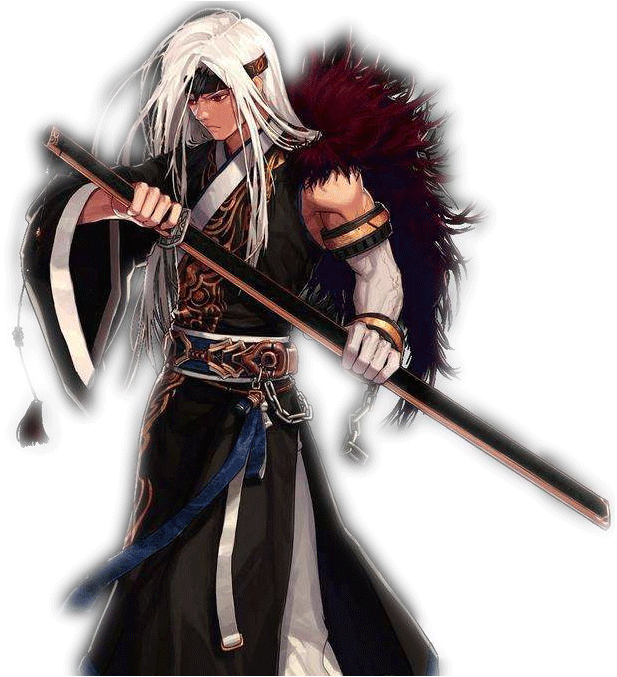
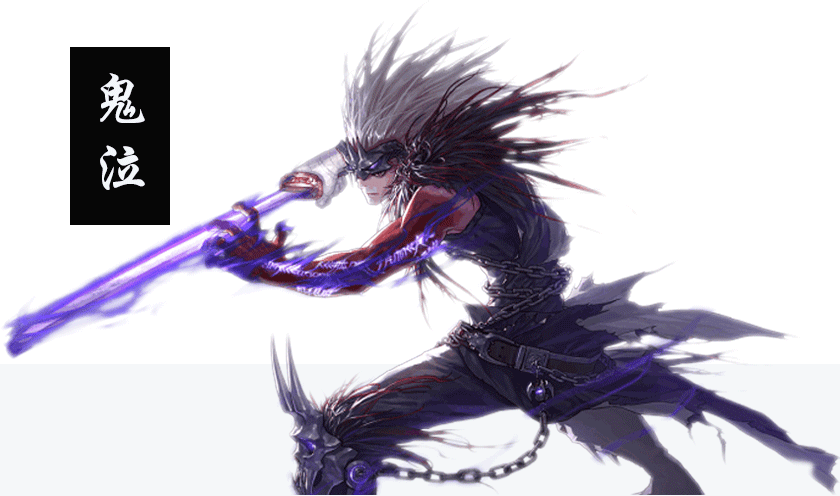
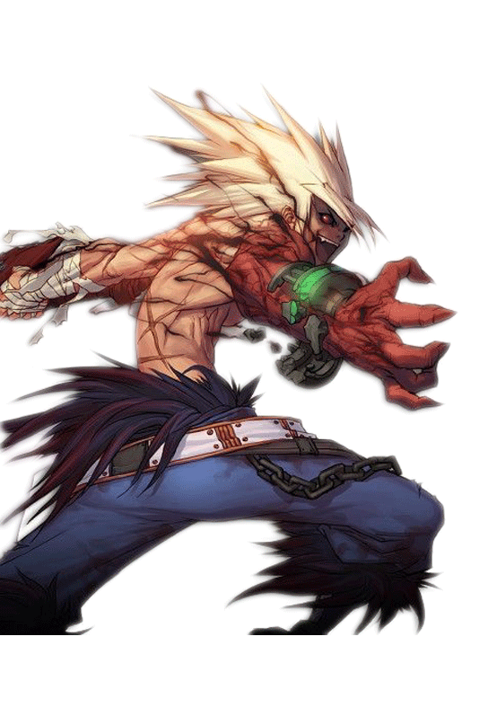
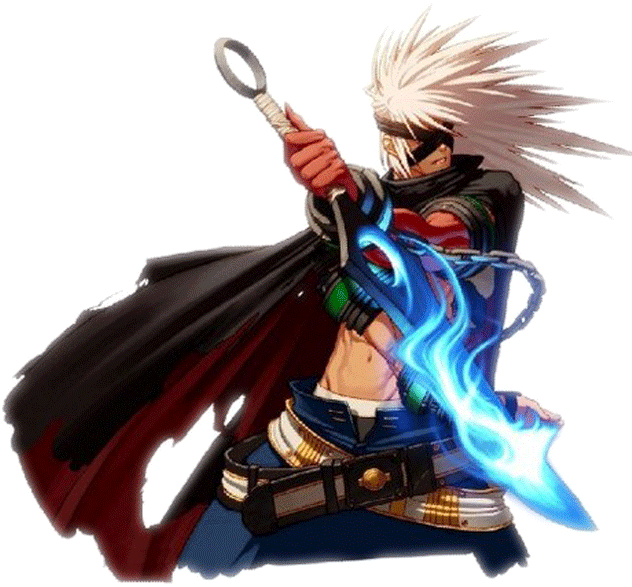

鬼剑士(男)

剑
魂
魂
“不屈服于鬼神的束缚，一如既往地修炼自己的宝剑，这不是武道的极限吗？”
有这样的一些人。无论是心脏虚弱还是缺少一只腿，他们在任何条件下都不会屈服，勇往直前，向自己特定的目标前进。
同样也有这样的一些人，即使拿武器的手变得扭曲，也不会向命运屈服，而会更努力地对武器进行精研。其中一部分人在各自的武器领域里达到了极限，人们将这些鬼剑士称为“剑魂”。
20多岁成为德罗斯帝国剑术指导的短剑达人巴恩，“10年前”在悲鸣洞穴失踪的太刀达人西岚，北部班图族族长钝器专家布万加，挎着长剑到处流浪的流浪儿阿甘左等，他们的故事振奋着所有的战士们。
有这样的一些人。无论是心脏虚弱还是缺少一只腿，他们在任何条件下都不会屈服，勇往直前，向自己特定的目标前进。
同样也有这样的一些人，即使拿武器的手变得扭曲，也不会向命运屈服，而会更努力地对武器进行精研。其中一部分人在各自的武器领域里达到了极限，人们将这些鬼剑士称为“剑魂”。
20多岁成为德罗斯帝国剑术指导的短剑达人巴恩，“10年前”在悲鸣洞穴失踪的太刀达人西岚，北部班图族族长钝器专家布万加，挎着长剑到处流浪的流浪儿阿甘左等，他们的故事振奋着所有的战士们。
“能否将命运的铁链揭开，完全在于自身的意志”
如果把缠绕在臂上的铁链松开，鬼神便会自由的行动，所以一部分鬼剑士会扔掉铁链成为鬼泣。巧妙的利用鬼神会对战斗有利。神官吉格将刀魂之卡赞、残影之凯贾、 冰霜之萨亚、侵蚀之普戾蒙等鬼神的使用方法传播给了鬼泣。鬼泣最终也不乐观。吉格在与野蛮人战斗中多次被雷击，失去了对付鬼神的技能，最后被鬼神们埋在了地下。
如果把缠绕在臂上的铁链松开，鬼神便会自由的行动，所以一部分鬼剑士会扔掉铁链成为鬼泣。巧妙的利用鬼神会对战斗有利。神官吉格将刀魂之卡赞、残影之凯贾、 冰霜之萨亚、侵蚀之普戾蒙等鬼神的使用方法传播给了鬼泣。鬼泣最终也不乐观。吉格在与野蛮人战斗中多次被雷击，失去了对付鬼神的技能，最后被鬼神们埋在了地下。


狂
战
士
战
士
“为了得到更强的力量，不惜一切代价！即使出卖自己的灵魂！”
被鬼神卡赞所控制的鬼剑士。也称为卡赞综合病症。
平时没什么异常，一旦有愤怒、激动的情绪，精神达到崩溃状态时会成为疯狂的鬼神。
因失去了理智所以无法区分敌军与我军，但他的速度与攻击力非常高。
狂战士卢克西摆平了异界生命体希洛克，希洛克是10年前的剑魂4人组合也无法相比的。
所以狂战士在疯狂的瞬间也许是所有职业里最强的。
被鬼神卡赞所控制的鬼剑士。也称为卡赞综合病症。
平时没什么异常，一旦有愤怒、激动的情绪，精神达到崩溃状态时会成为疯狂的鬼神。
因失去了理智所以无法区分敌军与我军，但他的速度与攻击力非常高。
狂战士卢克西摆平了异界生命体希洛克，希洛克是10年前的剑魂4人组合也无法相比的。
所以狂战士在疯狂的瞬间也许是所有职业里最强的。
“眼睛虽已长眠，但只要心脏不停，我的身体就是我的眼睛。”
“刀斩肉身，心斩灵魂，用心眼看世界”——阿修罗GSD
师承阿拉德大陆救世主GSD，为了能感触到波动，而放弃了眼睛。
失去双目后，为了加强近距离战斗力，向武将打造板甲护甲提高自身的防御力。 失去五感中的一感的他，向赫顿玛尔后院里的G.S.D习得了感知气流的功能，通过气流判断出敌人所在位置。
凡是靠近他的敌人都会被其强烈的杀气所震慑。
当你看到他周围存在大量的刻印符，而你却不幸成为他的猎物，相信死神已经离你不远了。
“刀斩肉身，心斩灵魂，用心眼看世界”——阿修罗GSD
师承阿拉德大陆救世主GSD，为了能感触到波动，而放弃了眼睛。
失去双目后，为了加强近距离战斗力，向武将打造板甲护甲提高自身的防御力。 失去五感中的一感的他，向赫顿玛尔后院里的G.S.D习得了感知气流的功能，通过气流判断出敌人所在位置。
凡是靠近他的敌人都会被其强烈的杀气所震慑。
当你看到他周围存在大量的刻印符，而你却不幸成为他的猎物，相信死神已经离你不远了。
阿
修
罗
修
罗
